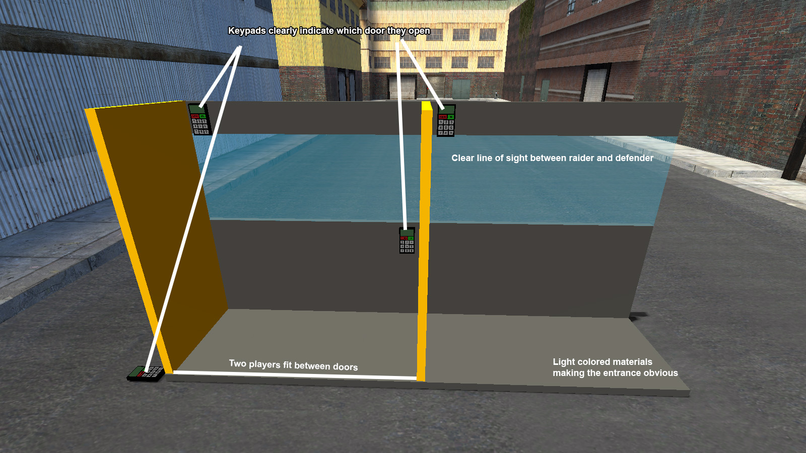

Brickwall Community - DarkRP Rules
General
- Blocking or exploiting the Gun Dealer NPC is strictly prohibited.
- Highly recommended to enable Steam's Game Recording feature or other game recording software
Roleplay Guidelines
- Use common sense at all times
- You must have a valid reason to pull out your weapon, don't walk around while holding a weapon as a citizen/criminal
Definitions
- RDM (Random Deathmatch): Killing without a valid in-character reason. Will be punished harshly.
- FailRP: Doing something unrealistic for your role. E.g., pulling a gun while being mugged at gunpoint.
- KOS (Kill on Sight): KOS signs are prohibited. You must have a valid reason to kill someone.
- Metagaming: Don’t use OOC or external info in RP. Think like your in-game character.
- NLR: New Life Rule- When you die you start a new life and forget everything that happened in your past life
Raiding
- Advertising a raid is not required.
- You must wait 30 minutes before raiding the same base again.
Mugging
- Advertising a mug is not required.
- The maximum amount you can mug for is $4,000.
- You can't mug Hobos
- Mugging someone who is holding a weapon is considered FailRP.
- There's a 30 minute cooldown before mugging the same player twice
Job-Specific Rules
Mayor
- Laws must be reasonable. Laws like
Killing is allowed are forbidden.
- You may build anywhere as long as you don’t prop block or obstruct NPCs.
Civil Protection
- You need a valid reason to warrant and raid a base (e.g., gunfire, explosions, Investigator suspicion).
- After arresting a player - advertise the arrest reason in chat
Base Building
- One-way props are only allowed for outside windows, keep it fair. don't gain advantage over one-way props
- Maximum of 2 fading doors between entrance and valuables. (including entrance fading doors)
- Each fading door must allow 2 players to fit between them.
- Players must be able to easily tell which door a Keypad is for.
- KOS signs are not allowed
- Your enemy must have direct line of sight of you if you shoot him, dont abuse leg glitches and one-ways
- Raiders must be able to stand freely between fading doors and in raiding entrance
- Don't make a maze out of your raiding entrace, The total length of the entrace cannot take longer than 10 seconds of running to cross
- Obstacles in the raiding entrance path are not allowed
- Building signs are allowed - when there's a building sign in your house, no Roleplaying is allowed. (no printers, no raiding)
- Black hole buildings are not allowed - don't use materials that confuse the players

Expression 2 (E2) and Wiremod
Expression 2
- Abusing E2 for an advantage (e.g., printer finders, wallhacks) is strictly forbidden.
- E2 door abuse (spamming doors to gain an edge) is not allowed.
Wiremod / StarfallEx
- Any abuse of Wiremod or StarfallEx will result in severe punishment.